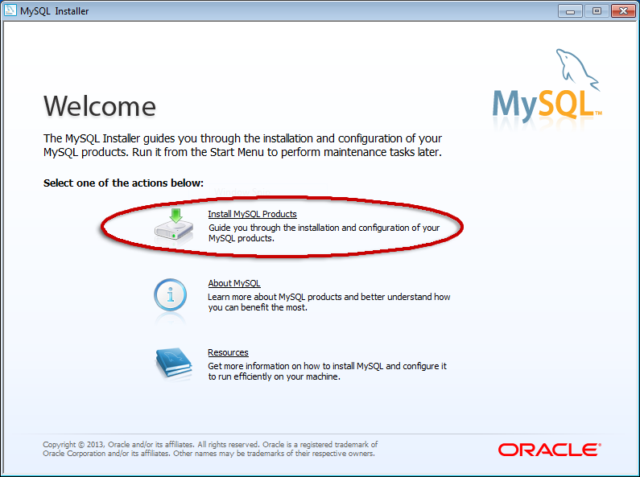
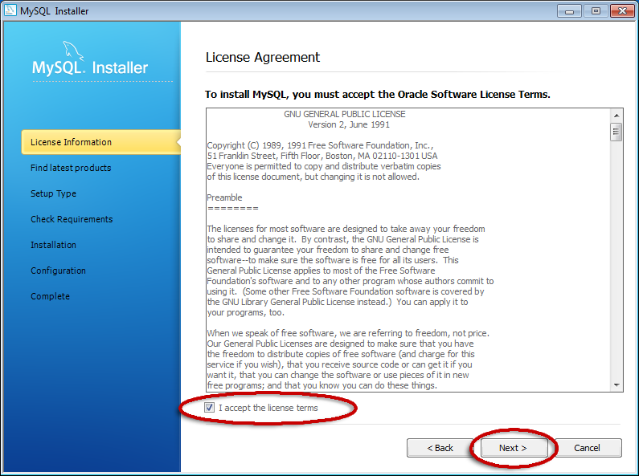
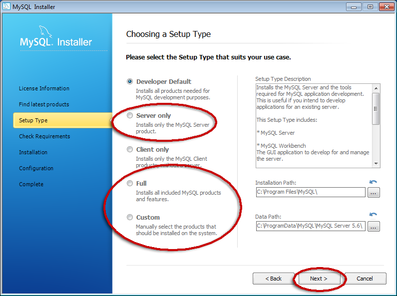
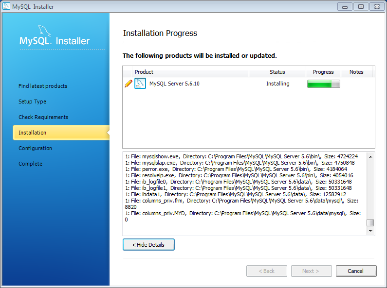
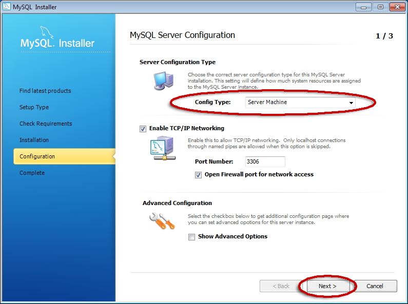
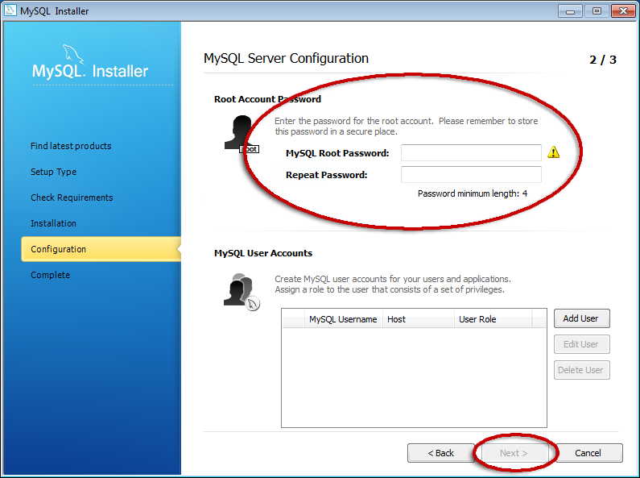
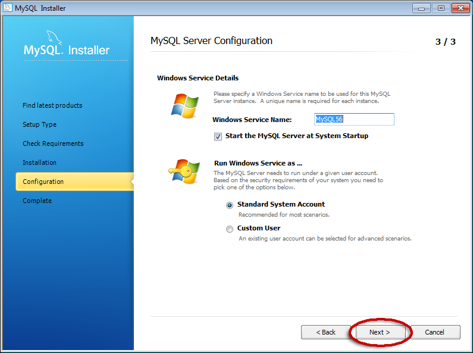
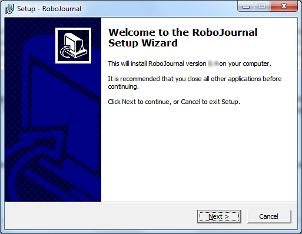

for version 0.5
Installing RoboJournal and Other Related Programs
Sections
Overview and System Requirements
RoboJournal was originally designed to run on x86 or AMD64 CPU architectures. Since RoboJournal's source code is publicly available under the GPL3, RoboJournal can be ported to less common system architectures (assuming that a full Qt environment and all necessary database applications are available for that platform). For instance, RoboJournal is compatible with Debian Linux systems running on MIPS, ARM, and POWERPC CPU architectures.
RoboJournal's system requirements are quite modest by modern standards since the program runs with ease even on very low-end computers. The following list addresses the bare minimum system requirements for the program to work effectively at all:
- A client computer with the following hardware and
software specifications*:
- Windows 2000 (or later) or Linux (kernel 2.6 or later).
- Pentium II or better (for 32-bit/x86). Any 64-bit CPU is likely adequate for custom AMD64 builds.
- Video display capable of achieving at least 1024x768 screen resolution. RoboJournal can run on 800x600 screen resolution (or below) but some parts of the interface may not completely fit on the screen even while maximized.
- 64 MB of RAM (on Windows).
- 58 MiB of hard disk space (on Windows). The Windows version of RoboJournal has a much larger installation footprint because it includes its own set of Qt libraries. Linux disk space requirements only include the RoboJournal executable itself (2-3 MiB) since Qt libraries on the system tend to be shared amongst all Qt apps and not just RoboJournal.
- Wired ethernet or 802.11a/b/g/n wireless network connectivity to interact with host/server†. Linux-based client machines require Internet connectivity in order to retrieve the necessary Qt packages.
- A server (host) machine with the following
specifications†:
- MySQL server instance (and root-level access permissions).
- Adequate bandwidth, memory, and processor speed to accommodate all database transactions. The specific requirements vary depending on your situation and the average system load on the machine in question.
* Requirements do not take operating
system/other software requirements into consideration. The
actual requirements are the cumulative requirements of the
entire software stack on the machine in question.
† A remote server/host machine and the hardware
necessary to connect to it are only necessary if your journal
database is not stored locally. In this case, "locally" is
defined as being the same machine on which RoboJournal is
installed. The server requirements should be added to the
base client system requirements if you are storing
your database locally.
Installing MySQL
RoboJournal requires a working MySQL server in order to use MySQL-based journals. This server process can run on the same computer as RoboJournal (i.e. localhost) or be deployed on a machine located on your LAN/WAN or on the Internet. The installation process creates a working MySQL server instance on the computer you have selected. Once installation is complete, the affected computer is able to receive and negotiate MySQL connections from itself and from other machines that have the correct access permissions.
You should consider installing MySQL Workbench after you have installed MySQL Server. MySQL Workbench is a replacement for the older MySQL Administrator tool (which provided a similar function). Although it is not required for MySQL Server to function, MySQL Workbench provides a visual environment to simplify interaction with your journals and other databases. As such, MySQL Workbench is ideal for users who are at the beginner-to-intermediate level of MySQL proficiency.
Windows Procedure
The Windows installation procedure for MySQL is very straightforward. You should begin by downloading the latest MSI installer package for Windows from the MySQL website. The free MySQL Community Edition is adequate for RoboJournal's requirements but you can also use the non-free Enterprise Version if you have a license for it. This guide uses version 5.6.10.1 but the procedure is probably applicable (unless otherwise noted) to newer versions as well. Once you have the installation file (in this case, mysql-installer-community-5.6.10.1.msi), double-click its icon to begin the installation process:
- Windows Vista and later may request confirmation when you double-click the installer executable. It is safe to proceed if the publisher is listed as "Oracle America, Inc." If that is the case, click the Run button to continue. You may need to provide confirmation twice. Once Windows has finished configuring the installer, the MySQL Installer Welcome window is displayed:Figure 1: MySQL installer main menu.
- Click the Install MySQL Products option. The License Agreement window is displayed:Figure 2: MySQL Community Edition is available under the GPLv2.
- Once you have read the license terms, check the I accept these license terms box. Click the Next button to continue.
- The installer will check to see if any upgrades are possible at the current time. Click the Execute button. Once the check is finished, click the Next button to continue.
- The Choosing a Setup Type window is
displayed:Figure 3: The
option you choose determines which features are
installed. Select the option that is the best fit
for your situation and click Next to
continue:
- Most users should select the Server Only option.
- Select the Full option if you want to install everything. This option requires Microsoft Excel 2007 (or newer) in addition to the Visual C++ Runtime needed to run MySQL Workbench.
- Select the Custom option to manually pick and choose which components should be installed (recommended if you only want MySQL Server and MySQL Workbench).
- The Check Requirements window informs you of any additional components that need to be installed. Click Next if you already have everything you need. You must install all required missing components before the installer will allow you to continue. When you get to the Installation Progress window, click the Execute button to begin the installation:Figure 4: MySQL installation in progress.
- Click the Next button twice after the installation is finished to begin configuration. The MySQL Server Configuration (1 of 3) window is displayed:Figure 5: Do not change any values (except the Config Type field) unless absolutely necessary.
- Change the Config Type: drop-down list item to "Server Machine". Click Next to continue (do not change any other values or enable Show Advanced Options unless you have good reason to make changes and you know what you are doing).
- The MySQL Server Configuration (2 of 3) window is displayed: Figure 6: The Next button is unlocked once the two fields that set the root password match.
- Enter a password for the root account in the
MySQL Root Password: and Repeat
Password: fields. The root password should be
strong (i.e. not easily guessed). A strong password
generally consists of a randomized ≥
9-character series of numbers, upper/lowercase characters,
and typographical symbols typically found on a keyboard.
This password is extremely important so either
memorize it or store it in a very safe place for future
reference. RoboJournal asks for the root password whenever
you create a new journal.
FYI: Do not create any other user accounts at this time unless you already have a journal you wish to import. In that case, go ahead and create the account that the imported journal is to be associated with.
- Click the Next button to continue. The MySQL Server Configuration (3 of 3) window is displayed. Do not change any of the values on this window unless you know exactly what you are doing and have a legitimate reason to make changes. Click Next to continue.Figure 7: MySQL should always run as a regular Windows service.
- MySQL will be automatically configured according to the parameters you provided. When the process is complete, click the Finish button to exit the MySQL installer.
MySQL is now installed and properly configured for your Windows system. You can now proceed with the RoboJournal installation process.
Linux Procedure
Unlike Windows, most software on Linux-based systems comes from centralized repositories managed by the various distributions. It is not unusual for several distributions to share the same repositories. If you are using a common distribution like Ubuntu or Fedora, MySQL can be automatically installed and configured by your package management system. Since this process is often handled entirely behind the scenes, there is no step-by-step graphical installer application.
The following table gives the commands required to install a MySQL server on the most common types of Linux. The various distributions are grouped into families; Ubuntu (and all its variants) is in the Debian family while Fedora is in the Red Hat family. In all instances, open a terminal window (bash shell or similar) and type the appropriate command for your operating system as root or a superuser:
| Debian Family — Debian, Ubuntu (all variants), Linux Mint, etc. | Install the "mysql-server" package with apt-get: sudo apt-get install mysql-server. You are prompted to set the MySQL root password during the setup process so you should have the password you intend to use ready in advance. MySQL is ready for use immediately after the installation process is finished. |
| Red Hat Family— Fedora, CentOS/Red Hat Enterprise | Install the "mysql-server" package with YUM: sudo yum install mysql-server. Once the package is installed, you must manually configure it by running sudo mysql_secure_installation because MySQL has little to no security immediately after installation. Finally, you must instruct MySQL to start automatically at every boot by running sudo systemctl enable mysqld.service && systemctl start mysqld.service. MySQL is available for use once you have finished the last step. |
| OpenSUSE (and all related distros) | Please consult http://en.opensuse.org/SDB:MySQL_installation. |
Installing RoboJournal
As a cross-platform application, RoboJournal is designed to be easy to install on a variety of operating systems. As such, RoboJournal can be installed on Windows 2000 and later through a traditional installer. RoboJournal binaries are also available in package format that can be installed on Linux-based systems through native package management tools.
Windows Procedure
An installer package for the latest version of RoboJournal is always available for the Windows platform. The RoboJournal installation package takes the form of a traditional Windows installer application that can be acquired directly from SourceForge or from one of the other software download sites on which it is mirrored. Each version of the RoboJournal installer package uses a distinctive naming convention (i.e. robojournal-[$version]-setup.exe) in order to help you differentiate it from any other installer packages that are likely to be found in your user account's Downloads folder.
Once you have downloaded the installer executable, double-click its icon to start the installation process. Windows Vista and later may require you to provide UAC authorization before setup is allowed to continue. The Setup Wizard is displayed after you have given the necessary permissions: Figure 8: The Windows installer walks you through the entire setup process. The tool looks and acts the same for all versions of RoboJournal.
You must complete all the steps in the installer to successfully install RoboJournal. The installer is very easy to use and provides its own instructions during each step of the procedure.
All official RoboJournal releases on the Windows platform are 32-bit. The 32-bit version is fully functional on both the x86 and x86-64 CPU architectures that nearly every version of Windows run on. However, you must build RoboJournal from source in order to get a true 64-bit version. Instructions for producing a 32-bit custom build are found in the "RoboJournal Compile and Installation Guide" (stored as "compile-instructions.xhtml" in the RoboJournal source package). Although the basic compile procedure is the same, you need 64-bit Qt libraries, 64-bit MySQL libraries, and a 64-bit compiler toolchain to produce a 64-bit version of RoboJournal.
Linux Procedure
Currently, an old pre-packaged version of RoboJournal (0.2.1 as of March 2013) is available in the Debian repositories (which are shared with Ubuntu and Linux Mint). These repositories contain multiple variants of the package that are suited for different system architectures (x86, x86-64, ARM, etc.). This package can be installed by running, apt-get install robojournal as root or superuser. The version in the Debian repositories is out of date because the Debian package upgrade cycle is much slower than RoboJournal's development process has been so far.
The only way to get the absolute latest version of RoboJournal on Linux is to build it from source. This is not difficult as it sounds because all you need are the Qt libraries that the old version of RoboJournal installs anyway in addition to the base Linux compiler toolkit. For more information on the compile process (including step-by-step instructions), please refer to the "RoboJournal Compile and Installation Guide" (stored as "compile-instructions.xhtml" in the RoboJournal source package).
Copyright © 2014 by Will Kraft. All parts of the RoboJournal Documentation are subject to the terms of the GNU Free Documentation License.